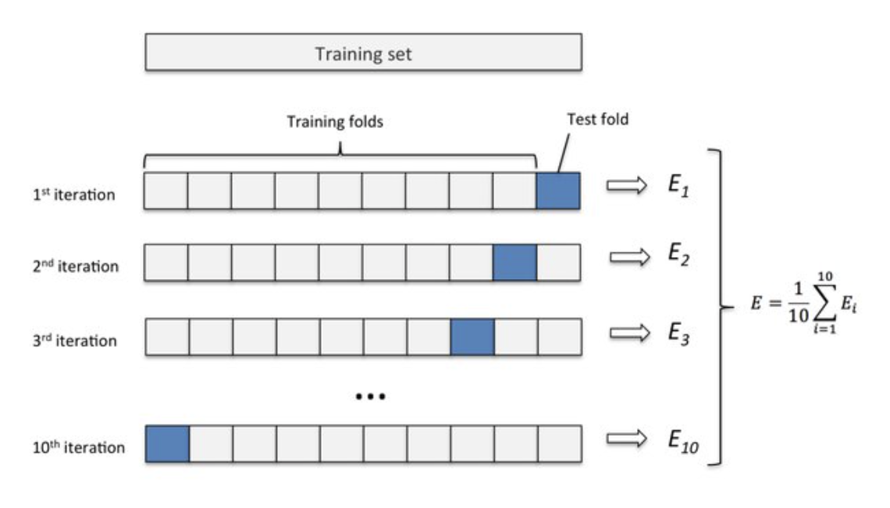
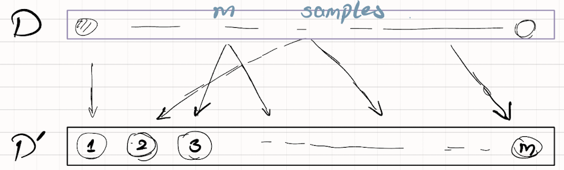

Fundamentals of Machine Learning
Basic Concepts
-
Supervised Learning
- Classification: 预测的是离散值
- Regression: 预测的是连续值
-
Unsupervised Learning: 训练数据没有标记信息
- Clustering: 将训练集分成若干组，组也称为 cluster（聚类和簇）
-
Generalization: 学得模型适用于新样本的能力
-
Distribution \(\mathcal{D}\): 样本空间中全体样本服从一个未知分布.
- i.i.e. = independent and identically distributed: 每一个样本都是独立地从这个分布上采样获得的
- 训练样本越多，从而关于分布的信息越多，从而有更大的可能获得具有强泛化能力的模型
-
Induction \(\neq\) Deduction: 从特殊到一般，从具体的事实归结出一般性规律；从基础原理推演出具体状况
- Inductive bias: 对某种类型假设的偏好
-
NFL = No Free Lunch Theoreme: 对于任意两个学习算法，其期望性能都相同。这意味着我们研究的模型与随机乱猜的期望相同。
- 前提：所有“问题”出现机会相同，假设了希望学习的函数均匀分布，但事实上并非如此，因此机器学习是有意义的。
Select and Evaluate the Models
-
Traing error = Empirical error, Generalization error: 经验误差，泛化误差
-
Overfitting, Underfitting
评估方法
-
- Hold-out : 留出法，直接将数据集划分
- 应尽量保证数据分布的一致性，不然会因其差异而产生偏差
- 划分比率问题：没有完美解决方案，大约 2/3 ~ 4/5，因为或模型不够稳定；或评估结果不稳定
- 一般采用若干次随机划分、重复实验取平均值
需要使用 Testing set 测试学习其对新样本的判别能力。
-
k-fold cross validation : 交叉验证法 
- LOO = Leave-One-Out，即假设 \(D\) 中有 \(m\) 个样本，m-fold cross validation. 只少一个样本使得留一法被评估的模型和期望评估的用 \(D\) 训练的相似，但计算开销可能是难以忍受的。
-
Bootstrapping: 自助法，在数据集较小、难以划分数据集的时候有用，重复提取进新数据集、再放回原数据集，初始数据集大概会有 未被提取进新数据集，采用 \(D'\) 作训练集，\(D \backslash D'\) 作测试集。问题：改变了初始数据集的分布，引入估计偏差。
- Hold-out : 留出法，直接将数据集划分
-
需要使用 Validation set 比较学得的不同模型的效果。